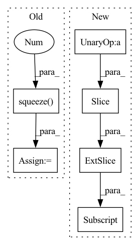

Pattern ID :35992

Before Change
def forward(self, x, **kwargs):
assert x.shape[2] == self.temporal_dim, "invalid number of frames given"
last_frame = x[:, :, -1] // [b, c, h, w]
big_branch = self.big_branch(x).squeeze(2) // [b, c, h, w]
out = self.final_merge(torch.cat([big_branch, last_frame], dim=1))
return out
def pred_n(self, x, pred_length=1, **kwargs):
After Change
x = x.transpose(1, 2) // shape: [b, c, t, h, w]
output_frames = []
for t in range(pred_length):
input = x[:, :, -self.temporal_dim:]
output_frames.append(self.pred_1(input))
return torch.stack(output_frames, dim=1), None
In pattern: SUPERPATTERN
Frequency: 3
Non-data size: 6
Instances
Fragment ID: 102305773
Project Name: ais-bonn/vp-suite
Commit Name: b1ebac921dc35dcaf5e5c3f9fe803c4c9e2d78f8
Time: 2022-01-14
Author: boltres@ais.uni-bonn.de
File Name: vp_suite/models/simple.py
M Class Name: SimpleV2
N Class Name: SimpleV2
M Method Name: forward(3)
N Method Name: forward(2)
M Parent Class: VideoPredictionModel
N Parent Class: VideoPredictionModel
M File Name: vp_suite/models/simple.py
N File Name: vp_suite/models/simple.py
M Start Line: 79
M End Line: 83
N Start Line: 86
N End Line: 92
'>
Before Change
out = torch.stack(hs, dim=1)
final_index_indices = final_index.unsqueeze(-1).expand(out.size(0), out.size(2)).unsqueeze(1)
final_out = out.gather(dim=1, index=final_index_indices.long()).squeeze(1)
out = self.linear(final_out).unsqueeze(1)
return out
After Change
// final_index_indices = final_index.unsqueeze(-1).expand(out.size(0), out.size(2)).unsqueeze(1)
// final_out = out.gather(dim=1, index=final_index_indices.long()).squeeze(1)
// import pdb ; pdb.set_trace()
out = self.linear(out[:,out.shape[1]-self.output_time:,:])
return out
'>
Fragment ID: 102305775
Project Name: sheoyon-jhin/ancde
Commit Name: 0ed00c106cfccfcd0a9d1c1640fb5e5ea278ce9d
Time: 2022-01-10
Author: sheoyonj@yonsei.ac.kr
File Name: experiments/models/other.py
M Class Name: _GRU_forecasting
N Class Name: _GRU_forecasting
M Method Name: forward(5)
N Method Name: forward(5)
M Parent Class: torch.nn.Module
N Parent Class: torch.nn.Module
M File Name: experiments/models/other.py
N File Name: experiments/models/other.py
M Start Line: 122
M End Line: 151
N Start Line: 122
N End Line: 151
'>
Before Change
// Remove last y_hat dimension if unidimensional loss (for MAE, RMSE, etc.)
if y_hat.shape[-1] == 1:
y_hat = y_hat.squeeze(-1)
loss = self.loss(y=outsample_y, y_hat=y_hat, mask=outsample_mask)
self.log("val_loss", loss, batch_size=self.batch_size, prog_bar=True, on_epoch=True)
After Change
scale=None,
mask=outsample_mask)
else:
y_hat = output[:, -val_windows:-1, :, :]
loss = self.loss(y=outsample_y, y_hat=y_hat, mask=outsample_mask)
self.log("val_loss", loss, batch_size=self.batch_size, prog_bar=True, on_epoch=True)
'>
Fragment ID: 102305776
Project Name: nixtla/neuralforecast
Commit Name: f22bf6b6c9e16557938ceff48393befa938d3d43
Time: 2022-11-24
Author: kin.gtz.olivares@gmail.com
File Name: neuralforecast/common/_base_recurrent.py
M Class Name: BaseRecurrent
N Class Name: BaseRecurrent
M Method Name: validation_step(3)
N Method Name: validation_step(3)
M Parent Class: pl.LightningModule
N Parent Class: pl.LightningModule
M File Name: neuralforecast/common/_base_recurrent.py
N File Name: neuralforecast/common/_base_recurrent.py
M Start Line: 280
M End Line: 292
N Start Line: 280
N End Line: 299